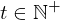

Show the Proof¶
In [1]:
import proveit
# Automation is not needed when only showing a stored proof:
proveit.defaults.automation = False # This will speed things up.
proveit.defaults.inline_pngs = False # Makes files smaller.
%show_proof
Out[1]:
| step type | requirements | statement | ||
|---|---|---|---|---|
| 0 | instantiation | 1, 2, 3 | ⊢  | |
 : :  , ,  : :  | ||||
| 1 | theorem | ⊢  | ||
| proveit.numbers.exponentiation.exp_nat_closure | ||||
| 2 | theorem | ⊢  | ||
| proveit.numbers.numerals.decimals.posnat2 | ||||
| 3 | instantiation | 4, 5, 6, 7 | ⊢ | |
:  , : , :  | ||||
| 4 | theorem | ⊢ | ||
| proveit.numbers.number_sets.integers.difference_is_nat | ||||
| 5 | instantiation | 12, 9, 8 | ⊢ | |
 : :  , ,  : :  , ,  : : | ||||
| 6 | instantiation | 12, 9, 10 | ⊢  | |
| : , : , : | ||||
| 7 | instantiation | 11, 14 | ⊢ | |
 : : | ||||
| 8 | instantiation | 12, 13, 14 | ⊢ | |
:  , : , : , : , : | ||||
| 9 | theorem | ⊢  | ||
| proveit.numbers.number_sets.integers.nat_within_int | ||||
| 10 | theorem | ⊢  | ||
| proveit.numbers.numerals.decimals.nat1 | ||||
| 11 | theorem | ⊢  | ||
| proveit.numbers.number_sets.natural_numbers.natural_pos_lower_bound | ||||
| 12 | theorem | ⊢  | ||
| proveit.logic.sets.inclusion.superset_membership_from_proper_subset | ||||
| 13 | theorem | ⊢  | ||
| proveit.numbers.number_sets.natural_numbers.nat_pos_within_nat | ||||
| 14 | axiom | ⊢  | ||
| proveit.physics.quantum.QPE.t_in_natural_pos | ||||